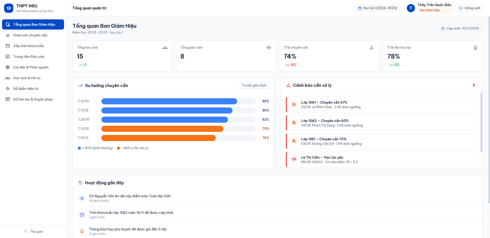

HỆ THỐNG QUẢN LÝ TRƯỜNG HỌC (HTQLLH / SMS)
Nghiên cứu lý thuyết Chuyên đề Tuần 1 đến Tuần 5 (SRS, UI/UX, DB, Kiến trúc, Design Patterns) kết hợp Hiện thực hóa Working Prototype 28 màn hình hoàn chỉnh.
Tại lớp học, tiến độ chương trình chính khóa đang ở giai đoạn Chuyên đề Kiến trúc & Mẫu Thiết Kế (Tuần 4 - 5). Nhóm đã thực hiện trọn vẹn cả 5 chuyên đề lý thuyết chuyên sâu, đồng thời chủ động đi trước tiến độ bằng việc xây dựng thành công Bản mẫu phần mềm hoạt động thực tế 100% (Working Prototype) với PostgreSQL 15, Node.js REST API và React 18 SPA.
Bối Cảnh Bài Toán, Mục Tiêu & Căn Cứ Pháp Lý
Chuẩn hóa quy trình học vụ, xóa bỏ phân mảnh dữ liệu và số hóa toàn diện trường học hiện đại
- Sổ sách và Excel phân mảnh: Giáo viên nhập điểm thủ công vào nhiều file riêng lẻ, nguy cơ sai sót công thức và khó kiểm soát phiên bản.
- Thông tin một chiều chậm trễ: Phụ huynh chỉ biết kết quả cuối kỳ qua sổ liên lạc giấy, không nắm được việc học sinh bỏ tiết bất thường.
- Nguy cơ gian lận sửa điểm: Thiếu quy trình chốt khóa sổ điểm 2 cấp và thiếu nhật ký ghi vết (Audit Log) không thể phủ nhận.
- Thu học phí thủ công: Kế toán kiểm đếm tiền mặt gây ùn tắc đầu năm học, đối soát hóa đơn tốn nhiều nhân lực.
- Thông tư 22/2021/TT-BGDĐT: Quy định về đánh giá học sinh THCS và THPT của Bộ Giáo dục & Đào tạo.
- Đánh giá thường xuyên (ĐĐGtx): Miệng, 15 phút (trọng số hệ số 1).
- Đánh giá định kỳ (ĐĐGđk): Giữa kỳ (trọng số hệ số 2), Cuối kỳ (trọng số hệ số 3).
- Quy chế khống chế môn: Xếp loại học lực Tốt, Khá, Đạt, Chưa đạt kết hợp điều kiện không có môn nào dưới ngưỡng điểm sàn.
- Tiêu chuẩn dữ liệu: Thang điểm hệ 10 và quy đổi tương đương GPA hệ 4.0 chuẩn quốc tế.
- Số hóa toàn diện 7 phân hệ: Tài khoản, Hồ sơ học sinh, Thời khóa biểu, Sổ điểm điện tử, Điểm danh, Học phí, Sổ liên lạc.
- Đa tác nhân tương tác (5 Roles): Phân quyền chặt chẽ theo mô hình RBAC (Admin, GVCN, GVBM, Học sinh, Phụ huynh).
- Toàn vẹn dữ liệu tuyệt đối (ACID): Áp dụng CSDL PostgreSQL và giao dịch nguyên tử khi lưu bảng điểm cả lớp 45 học sinh.
- Hiệu năng & Trải nghiệm cao: Phản hồi API <500ms, giao diện Web SPA tải trang tức thì không reload.
Tuần 1: Đặc Tả Yêu Cầu SRS & Mô Hình 5 Tác Nhân
Phân tích ranh giới hệ thống, định danh tác nhân và phân loại 43 trường hợp sử dụng (Use Cases)
| Tác nhân (Actor) | Mã định danh vai trò | Phạm vi nghiệp vụ & Quyền hạn cốt lõi | Use Cases tiêu biểu |
|---|---|---|---|
| Admin / BGH | ROLE_ADMIN | Quản trị toàn bộ danh mục khối, lớp, môn học, năm học; phân công giảng dạy cho GVBM và phân công GVCN; duyệt cấp quyền mở lại sổ điểm đã khóa; xuất báo cáo tổng kết toàn trường. | UC-BGH-01 đến 10 (Cấu hình năm học, duyệt mở sổ điểm, giám sát chuyên cần) |
| GV Chủ Nhiệm | ROLE_HOMEROOM_TEACHER | Điểm danh chuyên cần hàng ngày cho lớp chủ nhiệm; tiếp nhận và duyệt đơn xin nghỉ học từ phụ huynh; đánh giá xếp loại Hạnh kiểm; theo dõi tổng quát tình hình học tập và sổ liên lạc. | UC-GVCN-01 đến 10 (Điểm danh ngày, duyệt đơn nghỉ, đánh giá hạnh kiểm) |
| GV Bộ Môn | ROLE_SUBJECT_TEACHER | Điểm danh theo từng tiết học phụ trách; nhập và chỉnh sửa điểm thành phần (miệng, 15p, 1 tiết, GK, CK) của các lớp được phân công; tổng kết TBM; gửi yêu cầu chốt khóa sổ điểm môn học. | UC-GVBM-01 đến 10 (Nhập điểm, tính TBM, chốt khóa sổ điểm, báo giảng) |
| Học Sinh | ROLE_STUDENT | Tra cứu kết quả học tập cá nhân (bảng điểm chi tiết các môn, điểm trung bình tích lũy GPA hệ 10 và hệ 4); xem TKB, lịch kiểm tra, nhật ký chuyên cần; nộp đơn xin phúc khảo điểm. | UC-STU-01 đến 07 (Tra cứu điểm, xem TKB, xem chuyên cần, nộp phúc khảo) |
| Phụ Huynh | ROLE_PARENT | Sử dụng như Sổ liên lạc điện tử; xem kết quả học tập, điểm số và hạnh kiểm của con; gửi đơn xin nghỉ học trực tuyến; nhận thông báo vắng học tức thời; thanh toán học phí qua mã VietQR. | UC-PAR-01 đến 09 (Sổ liên lạc, gửi đơn nghỉ học, thanh toán VietQR) |
Ma Trận Phân Quyền RBAC & Quy Tắc Nghiệp Vụ Trọng Tâm
Bảo đảm an toàn dữ liệu học vụ qua phân quyền chi tiết và tự động hóa công thức tính toán chuẩn mực
| Phân hệ / Đối tượng dữ liệu | Admin | GVCN | GVBM | Học sinh | Phụ huynh |
|---|---|---|---|---|---|
| Tài khoản & Phân quyền | C/R/U/D | R (Lớp) | R (Lớp) | R (Cá nhân) | R (Cá nhân) |
| Cấu hình Năm học / Môn / Lớp | C/R/U/D | R | R | R | R |
| Sổ điểm Thành phần & TBM | R / L | R (Lớp) | C/R/U (Dạy) | R (Cá nhân) | R (Con) |
| Đánh giá Hạnh kiểm | R / A | C/R/U (Lớp) | - | R (Cá nhân) | R (Con) |
| Điểm danh Chuyên cần | R | C/R/U (Ngày) | C/R/U (Tiết) | R (Cá nhân) | R (Con) |
| Đơn xin nghỉ học | R | R / A (Lớp) | R (Lớp) | - | C/R/U |
| Học phí & Thanh toán VietQR | C/R/U/D | R (Lớp) | - | R (Cá nhân) | R / U (Đóng) |
TBM = (Sum(ĐĐG_tx) + 2 * ĐĐG_gk + 3 * ĐĐG_ck) / (SoCot_tx + 5)
// Quy đổi GPA Hệ 10 sang Hệ 4.0:
8.5 - 10.0 => 4.0 (A) | 7.0 - 8.4 => 3.0 (B)
5.5 - 6.9 => 2.0 (C) | 4.0 - 5.4 => 1.0 (D) | <4.0 => 0.0 (F)
- Xếp loại Tốt (Giỏi): ĐTB các môn ≥ 6.5, trong đó có ít nhất 6 môn ≥ 8.0, không có môn nào < 5.0.
- Xếp loại Khá: ĐTB các môn ≥ 5.0, trong đó có ít nhất 6 môn ≥ 6.5, không có môn nào < 3.5.
- Xếp loại Đạt: Không quá 1 môn < 3.5 và không môn nào < 2.0.
2. Cấp 2 (BGH): Khi có đơn phúc khảo được duyệt, chỉ tài khoản Admin mới có quyền mở khóa tạm thời sổ điểm để cập nhật điểm mới kèm lý do giải trình.
Tuần 2: Nghiên Cứu UI/UX - WinForms vs Web SPA vs Mobile App
Đánh giá khả năng hiển thị dữ liệu bảng biểu lớn, chi phí bảo trì và trải nghiệm người dùng đa thiết bị
| Tiêu chí đánh giá | Desktop (WinForms) | Thiết bị di động (Native Mobile) | Nền tảng Web SPA (Lựa chọn chốt) |
|---|---|---|---|
| Môi trường vận hành | Cài đặt trực tiếp (.exe / .msi) trên máy trạm Windows OS. | Cài đặt từ App Store / Google Play trên smartphone. | Trình duyệt Web (Chrome, Edge, Safari) không cần cài đặt. |
| Tính đa nền tảng | Kém: Chỉ hỗ trợ Windows, không chạy được macOS, Linux hay mobile. | Khá: Cần phát triển riêng Android và iOS (hoặc dùng Flutter). | Tuyệt đối: Hoạt động đồng nhất trên PC, Laptop, Tablet, Smartphone. |
| Nhập liệu bảng lớn (45 HS) | Xuất sắc: DataGridView hỗ trợ phím tắt cực nhanh cho văn phòng. | Kém: Màn hình 4-6 inch bị quá tải khi hiển thị ma trận nhiều cột điểm. | Rất tốt: Giao diện bảng biểu co dãn mượt mà trên màn hình Desktop lớn. |
| Cập nhật phần mềm | Khó khăn: Phải cài đặt lại hoặc cập nhật thủ công trên từng máy trạm. | Phức tạp: Chờ duyệt store từ Apple và Google. | Tức thì: Triển khai bản cập nhật tập trung tại Web Server trung tâm. |
| Khả năng tiếp cận của PH/HS | Rất thấp: Phụ huynh không thể tra cứu điểm khi đang di chuyển. | Rất cao: Nhận thông báo đẩy (Push Notification) tiện lợi. | Rất cao: Truy cập tức thời qua link web mà không cần tải ứng dụng. |
Tuần 2: Lựa Chọn Frontend Framework & Công Nghệ Thiết Kế
So sánh khoa học giữa React, Angular, Vue.js, Svelte và luận cứ chốt hệ sinh thái phát triển
| Tiêu chí so sánh | React (Meta) - Lựa chọn chốt | Angular (Google) | Vue.js (Evan You) | Svelte (Rich Harris) |
|---|---|---|---|---|
| Phân loại kiến trúc | UI Library hướng Component linh hoạt | Full-fledged Framework toàn diện | Progressive Framework tăng tiến | Trình biên dịch Build-time Compiler |
| Cơ chế Render DOM | Virtual DOM (DOM ảo) tối ưu cập nhật | Real DOM kết hợp Change Detection | Virtual DOM (DOM ảo) | Thao tác Real DOM trực tiếp lúc compile |
| Ràng buộc dữ liệu | One-way Data Binding rõ ràng, dễ debug | Two-way Data Binding tự động | Two-way Data Binding linh hoạt | Phản ứng tự động lúc biên dịch |
| Độ khó tiếp cận | Trung bình (Cần nắm JSX, Hooks, State) | Cao (Bắt buộc TypeScript, RxJS, DI) | Dễ (Tách bạch HTML, CSS, JS) | Rất dễ (Cú pháp gần với web thuần) |
| Hệ sinh thái & Thư viện | Khổng lồ số 1 thế giới, tài liệu dồi dào | Rất lớn, chuẩn hóa doanh nghiệp | Lớn, tài liệu hướng dẫn rất tốt | Đang phát triển nhanh, cộng đồng nhỏ hơn |
Tuần 3: Nghiên Cứu CSDL - Khảo Sát & So Sánh 5 Hệ Quản Trị CSDL
Đối chiếu nghiêm ngặt theo các tiêu chuẩn toàn vẹn dữ liệu, giao dịch ACID và bảo mật phân quyền dòng
| Tiêu chí đánh giá SRS | Microsoft SQL Server | PostgreSQL (Lựa chọn chốt) | MySQL / MariaDB | Supabase (BaaS) | MongoDB (NoSQL) |
|---|---|---|---|---|---|
| Data Integrity (Toàn vẹn) | Rất cao: PK, FK, CHECK constraint | Rất cao: Chuẩn ANSI SQL, CHECK, Domain | Cao: Engine InnoDB chuẩn | Rất cao (Nền tảng Postgres) | Thấp: Schema-less, thiếu FK |
| Giao dịch ACID | Hoàn chỉnh (Mô hình WAL) | Hoàn hảo: MVCC độc lập, an toàn tuyệt đối | Tốt với InnoDB engine | Hoàn chỉnh (Kế thừa Postgres) | Hạn chế trên nhiều collection |
| Bảo mật dòng (RLS) | Có hỗ trợ bản Enterprise | Hỗ trợ gốc Row-Level Security chuẩn | Hạn chế, cấu hình phức tạp | Hỗ trợ RLS qua giao diện web | Phải tự xử lý tại code backend |
| Hỗ trợ kiểu bán cấu trúc | Có hỗ trợ chuỗi JSON | Xuất sắc: Kiểu JSONB có chỉ mục GIN | Có hỗ trợ JSON cơ bản | Xuất sắc (Kế thừa Postgres) | Bản địa (Lưu trữ BSON) |
| Chi phí bản quyền & Vận hành | Rất đắt: Bản Enterprise > $3,000/core | Miễn phí 100%, mã nguồn mở, Dockerized | Miễn phí mã nguồn mở | Gói miễn phí giới hạn dung lượng | Bản Community miễn phí |
Tuần 3: Kiến Trúc CSDL PostgreSQL & Lược Đồ ERD 3NF
Tối ưu hóa hiệu năng bằng chỉ mục B-Tree, ràng buộc toàn vẹn CHECK và kiến trúc lưu trữ dữ liệu an toàn
- MVCC (Multi-Version Concurrency Control): Cơ chế kiểm soát đồng thời đa phiên bản giúp các truy vấn đọc không bao giờ chặn truy vấn ghi, tối ưu khi nhiều GV nhập điểm cùng lúc.
- WAL (Write-Ahead Logging): Mọi thay đổi dữ liệu được ghi vào nhật ký trước khi ghi vào đĩa, bảo đảm phục hồi nguyên vẹn khi mất điện đột ngột.
- Connection Pooling: Duy trì từ 20 đến 50 kết nối sẵn sàng, tránh nghẽn tài nguyên RAM khi số lượng truy cập đồng thời tăng cao.
ALTER TABLE grades ADD CONSTRAINT chk_score_valid
CHECK (score >= 0.0 AND score <= 10.0);
-- Chỉ mục B-Tree tăng tốc tra cứu điểm học sinh theo môn:
CREATE INDEX idx_grades_student_subject
ON grades (student_id, subject_id, semester);
| Bảng CSDL | Khóa chính (PK) | Khóa ngoại (FK) & Thuộc tính cốt lõi |
|---|---|---|
roles |
role_id |
role_name (ADMIN, GVCN, GVBM, STUDENT, PARENT) |
users |
user_id |
username, password_hash (bcrypt), role_id (FK), is_active |
classes |
class_id |
class_name (10A1), grade_level (10), homeroom_teacher_id (FK) |
subjects |
subject_id |
subject_name, coefficient (hệ số môn), periods_per_week |
students |
student_id |
user_id (FK), full_name, dob, class_id (FK), parent_user_id (FK) |
grade_books |
grade_id |
student_id (FK), subject_id (FK), score_tbm, is_locked (BOOL) |
attendances |
attendance_id |
student_id (FK), date, status (present/absent/late), note |
tuitions |
tuition_id |
student_id (FK), amount, status (pending/paid), receipt_url |
Tuần 4: Nghiên Cứu Kiến Trúc Phần Mềm - So Sánh 5 Mô Hình
Khảo sát toàn diện 3 cấp độ kiến trúc và luận cứ lựa chọn mô hình Clean Architecture cho hệ thống
| Tiêu chí đánh giá | 3-Layer | N-Layer | Clean Architecture (Chốt) | Event-Driven (EDA) | Microservices |
|---|---|---|---|---|---|
| Cấp độ phân loại | Tổ chức mã nguồn nội bộ | Tổ chức mã nguồn nội bộ | Tổ chức mã nguồn độc lập | Giao tiếp bất đồng bộ | Phân tách triển khai phân tán |
| Mức độ phụ thuộc (Coupling) | Cao: BLL dính chặt DAL | Trung bình: Nhiều DTO/Mapper | Thấp tuyệt đối (Đảo ngược DIP) | Thấp giữa Producer/Consumer | Thấp giữa các Service |
| Khả năng Unit Test nghiệp vụ | Khó nếu không có DB thật | Khá | Xuất sắc: Test độc lập với Mock Repo | Phức tạp do tính bất đồng bộ | Khó kiểm thử tích hợp chéo |
| Tính nhất quán dữ liệu | ACID tức thời trên 1 DB | ACID tức thời trên 1 DB | ACID tức thời trên 1 DB | Eventual Consistency (Độ trễ) | Rất khó (Distributed Transaction) |
| Độ phức tạp vận hành | Rất thấp | Thấp - trung bình | Thấp (Mô hình Modular Monolith) | Trung bình - cao (Cần Message Broker) | Rất cao (API Gateway, Docker swarm) |
Tuần 4: Thiết Kế Clean Architecture & Nền Tảng Backend Node.js
Hiện thực hóa quy tắc phụ thuộc hướng tâm và tận dụng sức mạnh cơ chế Event Loop xử lý bất đồng bộ
- 1. Entities (Trung tâm): Định nghĩa đối tượng nghiệp vụ thuần túy (`Student`, `GradeBook`) và quy tắc bất biến độc lập hoàn toàn với framework.
- 2. Use Cases (Ứng dụng): Điều phối luồng xử lý các ca sử dụng cụ thể (`CalculateGradeUseCase`, `LockGradeBookUseCase`, `MarkAttendanceUseCase`).
- 3. Interface Adapters: Chuyển đổi dữ liệu giữa Use Cases và môi trường ngoài (`GradeController`, `StudentRepositoryImpl`, DTO).
- 4. Frameworks & Drivers (Ngoài cùng): Công nghệ hạ tầng cụ thể (`Express.js`, `pg` PostgreSQL Driver, Web server HTTP).
1. Timers (setTimeout, setInterval)
2. Pending Callbacks (I/O callbacks trễ)
3. Idle, Prepare (Hệ thống nội bộ)
4. Poll (Tiếp nhận kết nối I/O mới & thực thi scripts)
5. Check (setImmediate callbacks)
6. Close Callbacks (socket.on('close'))
- Đơn luồng phi nghẽn (Single-threaded Non-blocking): Node.js ủy quyền các tác vụ truy vấn SQL sang Libuv Worker Pool, luồng chính tự do tiếp nhận hàng ngàn kết nối đồng thời.
- Thời gian đáp ứng <100ms: Xử lý cực nhanh cho các tác vụ I/O cường độ cao như ghi điểm danh và kiểm tra bảng điểm lớp.
Tuần 5: Mẫu Thiết Kế - MVC & MVVM Trong Web Hiện Đại
Áp dụng biến thể Split-MVC phân tách Backend/Frontend và tư tưởng MVVM qua Custom Hooks trong React
- Model (Backend): Định nghĩa các thực thể và quy tắc tính điểm chuẩn tại máy chủ Node.js/PostgreSQL. Đảm bảo tính toán tập trung, tránh sao chép logic.
- View (Frontend React): Màn hình `GradebookPage.jsx`, hiển thị dữ liệu bảng điểm động và tiếp nhận tương tác từ giáo viên.
- Controller (Backend Express): Tiếp nhận yêu cầu HTTP từ View, kiểm tra dữ liệu đầu vào (Validation) và gọi Use Case tương ứng.
- Khắc phục Fat Controller: Giữ Controller cực mỏng (Slim Controller), chỉ làm nhiệm vụ ủy quyền điều phối, không nhồi nhét câu lệnh SQL hay logic tính điểm.
const [rows, setRows] = useState([]);
const [status, setStatus] = useState('idle');
const setScore = (studentId, col, val) => {
// Kiểm tra biên và tự động cập nhật TBM xem trước
setRows(prev => prev.map(r => r.id === studentId ? { ...r, [col]: val } : r));
};
const saveAll = async () => {
setStatus('saving');
await api.saveGrades({ classId, subjectId, rows });
setStatus('saved');
};
return { rows, status, setScore, saveAll };
}
Tuần 5: Mẫu Thiết Kế - Repository & Unit of Work Pattern
Giải pháp bảo đảm tính nguyên tử (Atomicity) khi lưu đồng thời bảng điểm của cả lớp 45 học sinh
- Mục đích: Đóng gói toàn bộ thao tác truy vấn dữ liệu vào một lớp trung gian; tầng nghiệp vụ gọi `findByStudent` hoặc `save` mà không cần biết các câu lệnh SQL cụ thể.
- Khả năng kiểm thử (Testability): Trong các bài kiểm thử tự động, dễ dàng thay thế `PgGradeRepository` bằng `MockGradeRepository` trong bộ nhớ mà không cần dựng CSDL thật.
constructor(client) { this.client = client; }
async save(grade) {
await this.client.query(
`INSERT INTO grades (...) VALUES (...) ON CONFLICT (...) DO UPDATE ...`,
[grade.studentId, grade.scoreTbm, ...]
);
}
}
constructor(pool) { this.pool = pool; }
async run(work) {
const client = await this.pool.connect();
try {
await client.query('BEGIN'); // Bắt đầu giao dịch
const result = await work({ grades: new PgGradeRepository(client) });
await client.query('COMMIT'); // Xác nhận lưu 45 HS
return result;
} catch (err) {
await client.query('ROLLBACK'); // Hoàn tác an toàn khi lỗi
throw err;
} finally {
client.release(); // Trả kết nối về Pool
}
}
}
Tuần 5: Nguyên Lý DIP, Kỹ Thuật Dependency Injection & Vòng Đời
Triển khai Composition Root tại server.js và quản lý 3 vòng đời đối tượng cốt lõi trong hệ thống
- DIP (Nguyên lý kiến trúc): Nguyên lý đảo ngược phụ thuộc trong bộ SOLID. Quy định các module cấp cao (Use Case) không được phụ thuộc vào module cấp thấp (PostgreSQL); cả hai cùng phụ thuộc vào abstraction.
- DI (Kỹ thuật hiện thực): Truyền phụ thuộc từ bên ngoài vào qua hàm khởi tạo (Constructor Injection) thay vì đối tượng tự khởi tạo bằng từ khóa `new`.
const pool = new PgPool(config);
const uow = new UnitOfWork(pool);
// 2. Tiêm vào Use Case
const gradeUseCase = new SaveGradesUseCase(uow);
// 3. Tiêm Use Case vào Controller
const gradeController = new GradeController(gradeUseCase);
- 1. Singleton: Tồn tại duy nhất một phiên bản trong toàn bộ vòng đời ứng dụng. Áp dụng cho: `Database Connection Pool`, `Logger`, `SystemConfiguration`.
- 2. Scoped: Tồn tại trong suốt một chu trình yêu cầu HTTP hoặc một giao dịch CSDL. Áp dụng cho: `Unit of Work`, `Transaction Client`.
- 3. Transient: Khởi tạo một phiên bản mới mỗi lần được yêu cầu. Áp dụng cho: DTO Mappers, Validators kiểm tra định dạng.
Đột Phá Đi Trước Tiến Độ: Hiện Thực Hóa Working Prototype
Không dừng lại ở lý thuyết trên giấy, nhóm đã hoàn thiện bản mẫu phần mềm chạy thực tế 100%
- Khởi chạy tự động qua Docker Compose trên cổng nội bộ an toàn.
- Nạp đầy đủ 8 bảng chuẩn 3NF, các trigger kiểm tra biên điểm và dữ liệu mẫu seed data thực tế gồm hơn 50 học sinh và 10 giáo viên.
- Đảm bảo cô lập dữ liệu và thuận tiện bàn giao cho giảng viên kiểm tra.
- Tổ chức chuẩn mực theo 4 tầng đồng tâm: Entities, Use Cases, Repositories, Controllers.
- Cơ chế xác thực JSON Web Token (JWT) và phân quyền chặt chẽ theo 5 vai trò RBAC.
- Áp dụng Unit of Work xử lý giao dịch nguyên tử khi lưu điểm và thu học phí.
- Xây dựng bằng Vite và Tailwind CSS với 28 trang giao diện chức năng hoàn thiện.
- Tích hợp thanh chuyển đổi vai trò (Role Switcher Tab) giúp ban giám khảo kiểm thử nhanh 5 luồng quyền hạn chỉ bằng 1 cú click.
- Đáp ứng hoàn hảo chuẩn Responsive từ máy tính văn phòng tới điện thoại phụ huynh.
Demo Trực Quan: 5 Cổng Thông Tin Theo Vai Trò Người Dùng
Trực tiếp đối chiếu thiết kế giao diện và luồng nghiệp vụ trên hệ thống phần mềm thực tế

Tổng Kết, Đóng Góp Thành Viên & Lộ Trình Kế Tiếp
Khẳng định kết quả đạt được và định hướng hoàn thiện các chuyên đề nâng cao tiếp theo
- Hoàn thành 100% mục tiêu lý thuyết: 5 tài liệu nghiên cứu chuyên đề chuyên sâu (SRS, UI/UX, CSDL, Kiến trúc, Mẫu thiết kế).
- Đột phá hoàn thành Working Prototype: Hệ thống hoạt động thực tế với 28 màn hình, kết nối CSDL PostgreSQL và API Node.js mượt mà.
- Làm việc nhóm hiệu quả: 5 thành viên đóng góp đồng đều (20% mỗi người), tuân thủ tuyệt đối quy trình cam kết mã nguồn trên GitHub.
- Võ Duy Bình (Lead): 20% - Khảo sát SRS, UI/UX Web, Kiến trúc Clean Architecture, Lập trình Prototype.
- Nguyễn Minh Quốc Bảo: 20% - Sổ điểm TT 22, CSDL PostgreSQL, Microservices, Repository Pattern.
- Trần Quang Vinh: 20% - Hồ sơ HS & TKB, Công cụ Figma, Node.js Event Loop, REST API.
- Võ Hoàng Sơn: 20% - Chuyên cần & Sổ liên lạc, WinForms Desktop, Rà soát CSDL, DIP & DI.
- Huỳnh Trung Tính: 20% - Phân hệ Học phí, Hướng dẫn PostgreSQL, So sánh Kiến trúc & Patterns.
- Tuần 6 (Chuyên đề 5 & 6): Phân hệ Export dữ liệu nâng cao (Excel SheetJS, PDF jsPDF) & Cơ chế bảo mật JWT/CORS.
- Tuần 7 (Chuyên đề 7): Xây dựng hệ thống Centralized Audit Logging lưu vết sửa điểm chống chối bỏ theo chuẩn OWASP.
- Tuần 8 (Chuyên đề 8): Chiến lược kiểm thử tự động (Unit Test, E2E) và đóng gói Docker Compose toàn diện.
Nhóm xin phép sẵn sàng lắng nghe các ý kiến đóng góp và giải đáp câu hỏi phản biện (Q&A).